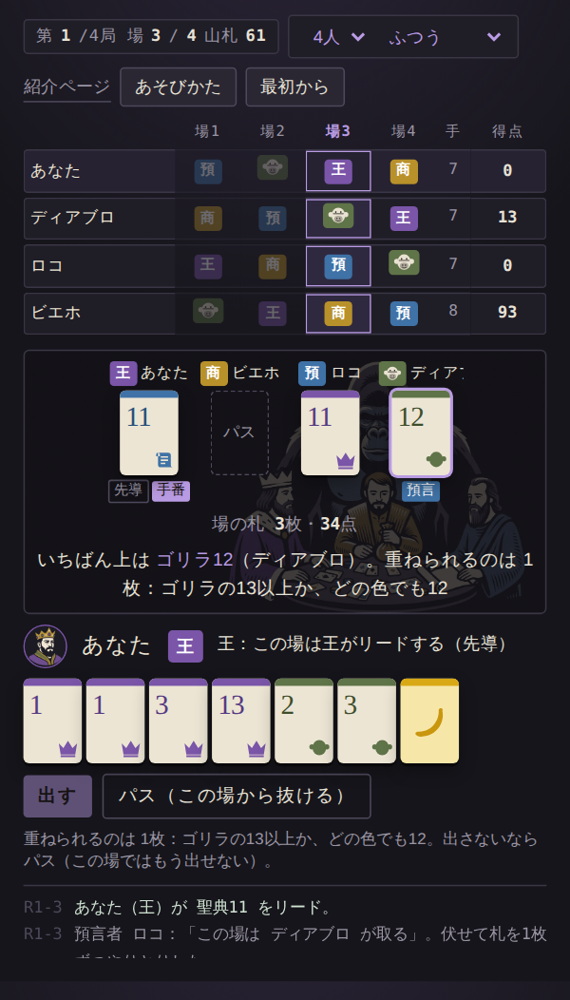

Kings and Gorillas: (When) Do Gorillas Matter?
王、商人、預言者、そしてゴリラ。四つの役割が場ごとに円卓を巡る、2〜4人用のカードゲームである。競り上げられた札の山は、最後に札を出した者がすべて手にする。ただ一頭、ゴリラだけは色の制約に縛られず、切り札シルバーバックをもって場を一挙に制する。英雄が歴史を動かすのか、それとも力が動かすのか。ジャレド・ダイアモンドの問いを、卓上で検証する。
全4局・16場。所要時間は札で約30分、アプリで15分以内。

BOARD GAME SHELF
題名の出典、および「王」「英雄」「遊び」をめぐる古典を挙げる。
元ネタ
ジャレド・ダイアモンド／土方奈美 訳、日経BP。副題は「リーダーは本当に歴史を動かすのか」。原題は Profits, Prophets, Coaches, and Kings: (When) Do Leaders Matter?。本作の副題は、日本語版副題の「リーダー」を「ゴリラ」に置き換えたものである。
Amazonで見る ↗王
フランス・ドゥ・ヴァール／西田利貞 訳、産経新聞出版。動物園のチンパンジーの群れにおいて、いかにして「王」の座が奪われ、また失われるのかを記録した観察記。政治は人類に先立つ、との知見は、王とゴリラとを結ぶ一本の線となる。
Amazonで見る ↗英雄は歴史を動かすか
トルストイ／望月哲男 訳、光文社古典新訳文庫。ナポレオンのごとき英雄が歴史を動かすのではないと、作中で論じた大著。 (When) Do Leaders Matter? に対する、150年前の回答である。
Amazonで見る ↗遊びの本
ロジェ・カイヨワ／多田道太郎・塚崎幹夫 訳、講談社学術文庫。遊びを「競争（アゴン）」「偶然（アレア）」などに分類した古典。先の役割を読む計画と、配られる札の偶然。本作はこの二つの原理の上に成り立つ。
Amazonで見る ↗リンクは Amazonアソシエイトである。価格と画像は毎日更新している。
どんなゲーム
札は貨幣・聖典・冠・ゴリラの4スートからなり、同じ数字が2枚ずつ存在する。数字はそのまま強さであり、得点である。このほか、組の欠けを補うバナナ4枚と、ゴリラの切り札シルバーバック1枚を加える。
四つの役割は円卓に配され、場が終わるたびに時計回りに隣席へ移る。1局は4場からなり、各人は王→商人→預言者→ゴリラの順にすべての役割を一度ずつ担う。預言者の次は、ゴリラである。
先導は1枚、連番（冠4・5・6）、同数（4・4・4）のいずれかで行う。以後は順に、同じ形・同じ枚数で同じ色の上位の数字、または同じ数字（色を問わない）を重ねていく。
ゴリラは数字が上であれば色を問わず重ねることができる。シルバーバックを出せば、その場は即座にゴリラに帰し、さらに他の全員から、得点札のうち最大のゴリラ札を1枚ずつ徴する。用いられたシルバーバックは山札に還り、再び誰かの手に渡る。ゴリラの手番は常に最後である。場が膨らむのを見届け、そのすべてを奪う。
得点となった札は二度とゲームに戻らない。局を重ねるごとに山札は痩せ、終局に近づくほど手札は細る。
あそびかた
能力は、その場でその役割を担う者にのみ与えられる。
場の最初に先導する。1枚か、連番か、同数か。場の形を定めるのは王である。
場を取れなかったときは、分配に先立ち場の貨幣のうち最大の1枚を得る。 貨幣であれば色を問わず重ねることもできる。取引の果実は勝者に帰しても、手数料は商人の手に落ちる。
先導に先立って一人を指名し、伏せたまま札を1枚ずつ交換する。相手がシルバーバックを持つならば、必ずそれが差し出される。指名した者が場を取れば、分配に先立ち場の聖典のうち最大の1枚を得る。
数字が上であれば色を問わず重ねられる。シルバーバックを出せば場は即座にゴリラに帰し、全員からゴリラ札を1枚ずつ徴する（群れを率いる）。シルバーバックは山札に還る。
つくり
フレームワークもビルドも用いない。app/index.html を開けば、そのまま動作する。題は『商人・預言者・指導者・王 リーダーは本当に歴史を動かすのか』の副題の「リーダー」を「ゴリラ」に、英語原題 (When) Do Leaders Matter? の Leaders を Gorillas に置き換えたものである。「第三のチンパンジー」を「第三のゴリラ」に、「鉄」を「ダイヤモンド」に改めてきたシリーズの第三作にあたる。
tools/sim_balance.py によりCPU同士で数千局を対戦させ、札の枚数、各役割の能力、ゴリラの強さを定めた。経緯は SPEC.md に記す。よくある質問
かからない。無料であり、広告も課金もない。
不要である。ブラウザで開くだけで遊べる。
送られない。得点も設定もその場限りで、保存すらしていない。
意図して強くしてある。ただしゴリラの役割は1局に一度しか回らず、全員に等しく巡る。他の者は、場が膨らむ前に取り切るか、預言によってシルバーバックを奪うことで、ゴリラの専横に抗う。
2〜4人である。あなたのほかに CPU が1〜3人加わる。札の数字の範囲は人数に応じて変わる（2人1〜9／3人1〜11／4人1〜13）。
遊べる。本の内容をなぞるゲームではなく、題と問いを借りたゲームである。
MORE TOOLS
ブラウザだけで動く道具とゲームを、一つのページにまとめている。